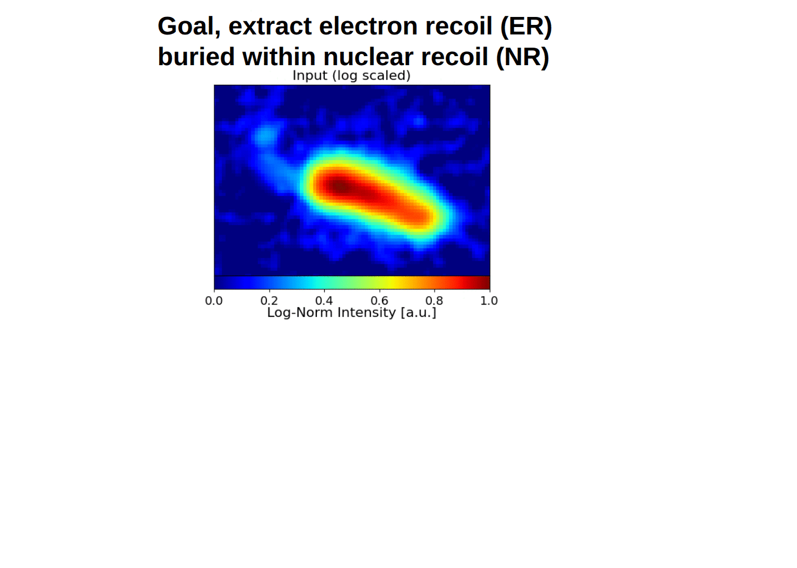

OASIS
Overlap-Aware Segmentation of ImageS
Overlap-Aware Segmentation of ImageS (OASIS) is a new deep learning framework for separating overlapping objects in scientific images while preserving object-specific intensities. OASIS is the first such framework designed to specifically target regions of overlap through region-specific weights in its loss function. We show that appropriate choices of region and object-specific weights in OASIS's loss function can significantly improve both topological and intensity reconstruction in regions of overlap, even in cases where a faint object overlaps with a much brighter object. The result is improved pixel-level separation on an object-by-object basis, enabling accurate reconstruction of topological observables on objects that were originally dominated by overlap. See our recent paper for more details!
